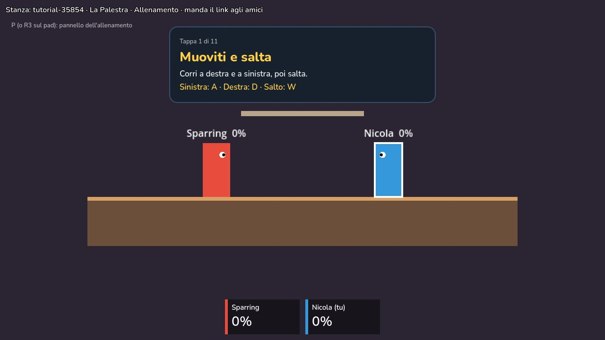
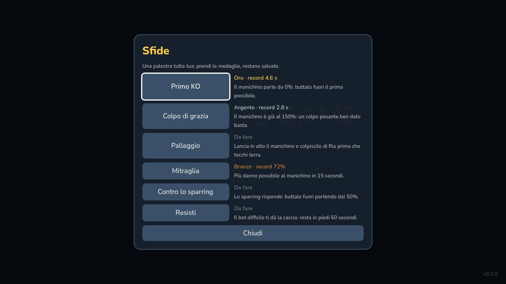
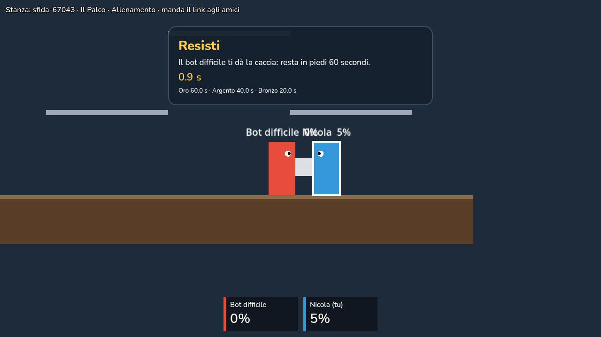
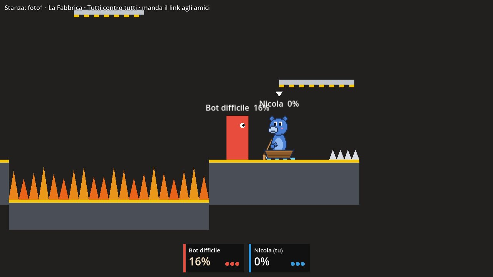
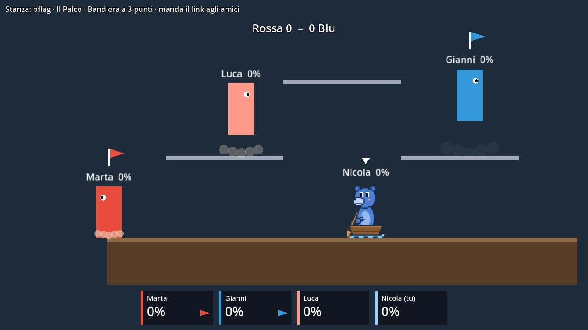
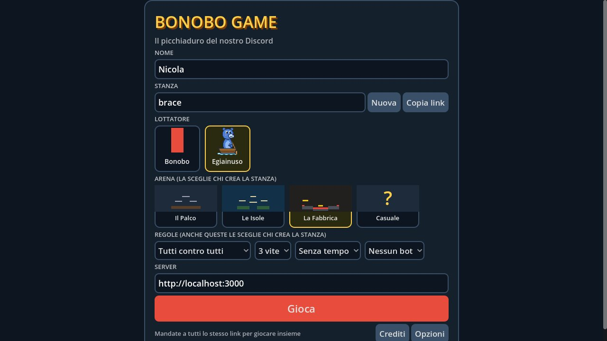
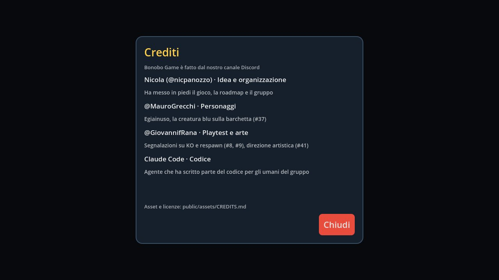

Nel browser
Apri il link e giochi. È sempre l'ultima versione: a ogni novità basta ricaricare la pagina.
Un picchiaduro fatto dal Discord, per il Discord
Il platform fighter dei Bonobi, stile Brawlhalla e Smash, fatto con Godot. Scarica il gioco o aprilo nel browser, chiama gli amici e cercate di buttarvi giù dall'arena.
Ogni lottatore, arena e provocazione viene da noi: le nostre facce, i nostri tormentoni, le nostre voci.
Novità: si gioca subito, dal sito. Il nostro server è sempre acceso: apri il gioco, crea una stanza e manda il link agli amici. Nessuno deve più ospitare la serata.
Gratis. Nel browser senza installare niente, oppure l'app per Windows, Mac e Linux.
Apri il link e giochi. È sempre l'ultima versione: a ogni novità basta ricaricare la pagina.
Si scarica una volta sola. A ogni avvio controlla se c'è una versione nuova e si aggiorna da sola.
Browser e app vanno sullo stesso server: chi crea la stanza manda il link sul Discord e tutti entrano, da dove vogliono.
Ogni modifica in lavorazione ha il suo link per provarla nel browser prima che entri nel gioco: lo trovi nella sua pagina su GitHub.
Sempre l'ultima versione, appena esce.
L'app si scarica una volta sola: poi si aggiorna da sola a ogni avvio.
Novità: il server è sempre acceso. Apri il gioco nel browser, crea una stanza e manda il link agli amici: non serve più che qualcuno ospiti la serata. La prima partita dopo un po' di silenzio impiega circa un minuto a partire, il tempo che il server si svegli.
Per altri sistemi: Windows · Mac · Linux. Scompatta lo zip e apri il gioco.
Windows: se compare "PC protetto", clicca "Ulteriori informazioni" e poi "Esegui comunque". Se chiede il permesso per la rete, clicca "Consenti".
Mac: il gioco non è firmato da Apple, quindi la prima volta il Mac lo blocca. Vai in Impostazioni di Sistema → Privacy e sicurezza e premi "Apri comunque" (sui Mac più vecchi basta tasto destro → Apri). Se dice che è danneggiato, apri il Terminale e scrivi xattr -cr ~/Downloads/"Bonobo Game.app".
Linux: se non parte, rendilo eseguibile con chmod +x bonobo-game.x86_64.
bonobo-server con un doppio clic. Lascia cloudflared lì accanto: è quello che ti fa raggiungere dagli amici, senza toccare il router.Si blocca all'apertura? Valgono gli stessi passi del gioco qui sopra (su Mac il file si chiama bonobo-server). Server per gli altri sistemi: Windows · Mac con chip Apple · Mac Intel · Linux. Dal codice: npm run host.
npm run host su un Mac Intel?Lì brew install cloudflared può fallire (succede con i Command Line Tools vecchi). Scarica il programma ufficiale da github.com/cloudflare/cloudflared/releases, il file cloudflared-darwin-amd64.tgz, oppure dal Terminale:
curl -L https://github.com/cloudflare/cloudflared/releases/latest/download/cloudflared-darwin-amd64.tgz | tar xz -C /usr/local/bin
Lo zip del server qui sopra ha già cloudflared dentro: questo serve solo a chi parte dal codice.
Il gioco ufficiale è il client fatto con Godot: lo scarichi qui sopra o lo apri nel browser. Ecco cosa è entrato finora.







Tutti contro tutti, Squadre, Bandiera a squadre e Corsa: un percorso nuovo a ogni stanza, vince chi arriva prima al traguardo.
Il Palco, Le Isole e La Fabbrica, con ascensori, navette, fuoco e spuntoni. Oppure Casuale, un'arena nuova ogni volta.
Dal cielo cadono banane: avvicinati e premi J o K per raccoglierle, poi di nuovo per lanciarle in faccia a qualcuno.
Dal titolo: il tutorial a tappe, la palestra con percentuale, rallentatore e hitbox, e sei sfide con le medaglie.
Da soli si gioca contro il manichino, il bot facile, quello normale o il difficile, che torna sul palco quando lo lanci fuori.
Le partite tra amici finiscono nella classifica della settimana. Risultati e titoli divertenti arrivano sul Discord.
Attacchi diversi tenendo su o giù, in aria, la schivata con L e il recupero verso l'alto con K + su mentre cadi.
Tasti da cambiare, volume, schermo intero e un menu con Esc per copiare il link della stanza.
Nella lobby c'è il bottone Crediti: ogni disegno, suono e idea porta il nome di chi l'ha fatta.
I colpi non tolgono vita: fanno salire la tua percentuale. Più è alta, più voli lontano.
Se ti lanciano oltre i bordi perdi una vita. Di solito sono 3, vince l'ultimo in piedi.
Le piattaforme sottili si attraversano da sotto. Col doppio salto rientri quando ti hanno lanciato.
Ogni partita è una stanza con il suo link: lo mandi sul canale e chi entra gioca.
| A D o ← → | Muoversi |
| W ↑ o Spazio | Saltare, di nuovo in aria per il doppio salto |
| S o ↓ | Scendere da una piattaforma, caduta veloce |
| J | Attacco leggero: veloce, spinge poco |
| K | Attacco pesante: lento, lancia lontano |
| J o K + ↑ / ↓ | Attacchi verso l'alto o radenti; in aria cambiano ancora |
| K + ↑ in aria | Recupero: uno slancio verso l'alto per tornare sul palco |
| L | Schivata: per un attimo i colpi non ti prendono |
| J o K vicino a un oggetto | Raccoglierlo; con l'oggetto in mano, lanciarlo |
| T · Esc · M | Provocazione · menu e opzioni · musica |
Una versione giocattolo delle regole vere, qui nella pagina. Prendi a pugni il sacco, fagli salire la percentuale e poi mandalo fuori con un pesante. Quanto riesci a mandarlo lontano?
Clicca sul riquadro per dargli i tasti. Danni e contraccolpo sono quelli del gioco vero (PR #10), la fisica è semplificata.
Presa dal vivo dalle issue su GitHub. Cosa sai fare? Scegli e trovi i lavori adatti a te, anche se non hai mai programmato.
Carico le issue…
Carico le issue…
Carico le PR…
Carico le PR…
La mappa completa è nell'issue #25. Per prendere un lavoro scrivi "ci penso io" nell'issue.
Le decisioni vere del gioco (quanto fa male il calcio, come si chiama l'arena) passano dal Parlamento. Si vota con un sondaggio nel canale Discord, qui trovi la seduta in corso e le delibere passate. Il risultato entra nel gioco, parola di bonobo.
Convoco il Parlamento…
Vuoi proporre una questione? Convoca una seduta e lancia il sondaggio sul Discord.
Ogni membro del Discord può avere il suo lottatore nel gioco. Compila la scheda, guarda l'anteprima e mandala: si apre un'issue su GitHub già scritta, e un umano o un agente la trasforma in un personaggio vero.
di qualcuno del canale
Le barre sono a occhio: i numeri veri li decide il gruppo.
Carico le proposte…
Il bar dove ci si trova, il campetto, l'ufficio di qualcuno: disegnalo nell'editor trascinando blocchi, piattaforme, ascensori e trappole. Vedi subito se si arriva dappertutto, poi premi "Proponi" e si apre un'issue su GitHub con i numeri già scritti.
Sprite dei lottatori, arene, sfondi. Bastano anche scarabocchi da cui partire.
Colpi, musica, e soprattutto le vostre voci per provocazioni e annunciatore.
Mosse, nomi, tormentoni. Le scelte di design passano dai sondaggi sul canale.
Godot (GDScript) per il gioco, TypeScript e Socket.IO per il server. Va benissimo anche farlo con il tuo agente AI.
Carico…